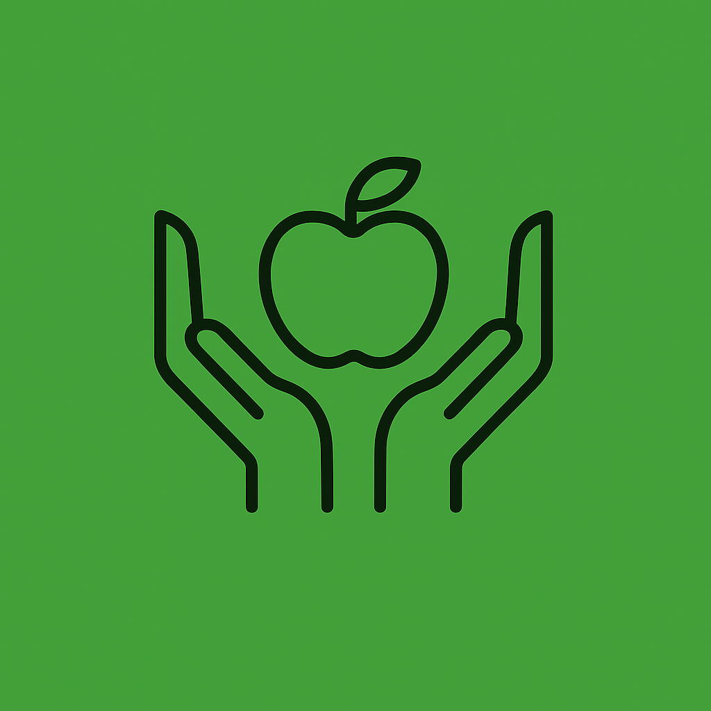

Throughout the project, we gained valuable insights into the HCI design process.
Lessons Learned: How to physically design an application and the steps to take to make sure the app is intuitive and accessable for all.
What Worked Well: Clear team communication, use of Figma and Canva.
Improvements for Next Time: Starting earlier on things so we don't miss anything.
Overall, while this project made us very knowledgeable on certain peoples situations, this project was very fun to create and design that can advance and foster a better society for all!
